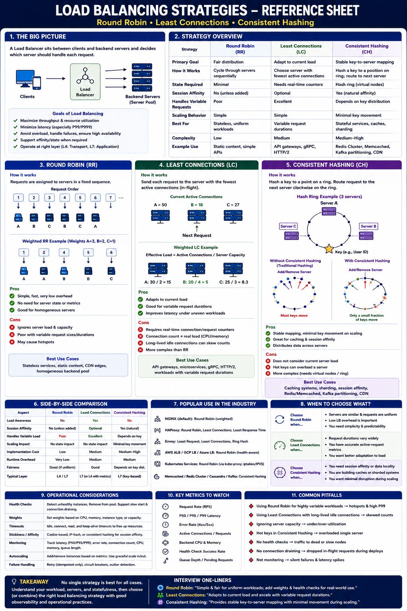

Round Robin · Least Connections · Consistent Hashing — choosing the right algorithm
The Big Picture
Load balancing is not simply about spreading requests — it is about maximizing throughput, minimizing P99 latency, preventing hotspots, improving availability, and supporting autoscaling. Choosing the wrong algorithm can overload healthy servers, increase tail latency, or reduce cache efficiency.
1 — Round Robin (RR)
Requests assigned sequentially. Every backend receives approximately the same number of requests.
Basic Round Robin
Weighted Round Robin
✅ Advantages
Extremely simple · O(1) scheduling · Very low CPU · Stateless · Easy to scale
❌ Disadvantages
Ignores backend load · No session affinity · Poor when request cost varies
Best for: stateless REST APIs, static websites, CDN edge servers, homogeneous backend pools where requests are roughly equal in cost.
2 — Least Connections (LC)
Send to the server with the fewest active connections. Adapts to variable request durations.
✅ Advantages
Adapts to workload · Better tail latency · Reduces overloaded servers · Good for variable durations
❌ Disadvantages
Requires real-time metrics · More scheduling overhead · Idle long connections distort count
Best for: API gateways, gRPC services, HTTP/2 workloads, microservices, reverse proxies, anywhere request duration varies significantly.
3 — Consistent Hashing
Map requests to servers using a hash of the request key. Same key always goes to same server.
Hash Ring
When Server Added/Removed
✅ Advantages
Stable key-to-server mapping · Minimal key movement · Natural session affinity · Cache locality
❌ Disadvantages
Ignores current load · Hot keys overload one server · More complex implementation
Best for: Redis Cluster, Memcached, Cassandra, Kafka partitioning, CDN cache routing, sticky sessions, distributed caches.
Strategy Comparison
| Feature | Round Robin | Least Connections | Consistent Hashing |
|---|---|---|---|
| Scheduling Cost | Very Low (O(1)) | Medium | Medium |
| Load Awareness | ❌ | ✅ | ❌ |
| Session Affinity | ❌ | Optional | ✅ |
| Variable Requests | Poor | Excellent | Depends on key |
| Cache Friendly | ❌ | ❌ | ✅ |
| Minimal Key Movement | N/A | N/A | ✅ |
| Operational Complexity | Low | Medium | High |
Industry Usage
| Environment | Default Strategy |
|---|---|
| NGINX | Round Robin |
| HAProxy | Round Robin / Least Connections |
| Envoy | Least Request (connection count) |
| AWS ALB | Round Robin (health-aware) |
| Kubernetes Services | Round Robin (IPVS/IPTables) |
| Memcached clients | Consistent Hashing |
| Redis Cluster | Consistent Hashing (CRC16 mod 16384 slots) |
| Cassandra | Consistent Hashing (token ring) |
| Kafka | Hash-based partition assignment |
Node Failure Behavior
Round Robin
Remove from rotation. Continue cycling remaining servers.
Least Connections
Connections redistributed across remaining servers. Adaptive balancing continues.
Consistent Hashing
Only affected keys remapped to next server on ring. Minimal disruption to other keys.
Staff Engineer Thinking
Junior
Round Robin distributes evenly
Senior
Use Least Connections for variable requests
Staff asks
Staff Engineer Decision Guide
| Requirement | Best Choice |
|---|---|
| Lowest complexity | Round Robin |
| Adaptive to real-time load | Least Connections |
| Stable key mapping | Consistent Hashing |
| Session affinity | Consistent Hashing |
| Cache locality | Consistent Hashing |
| Uniform stateless traffic | Round Robin |
| Variable request durations | Least Connections |
| gRPC / HTTP/2 microservices | Least Connections |
| Distributed cache sharding | Consistent Hashing |
Key Takeaways
